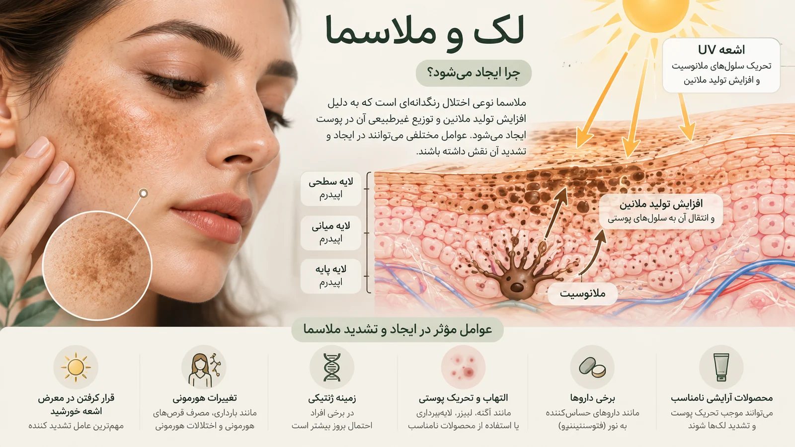
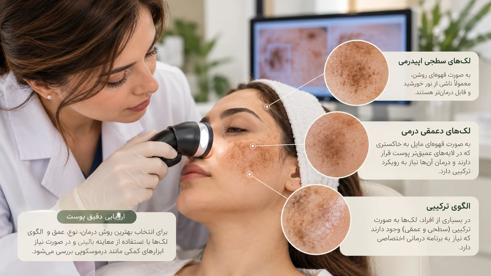
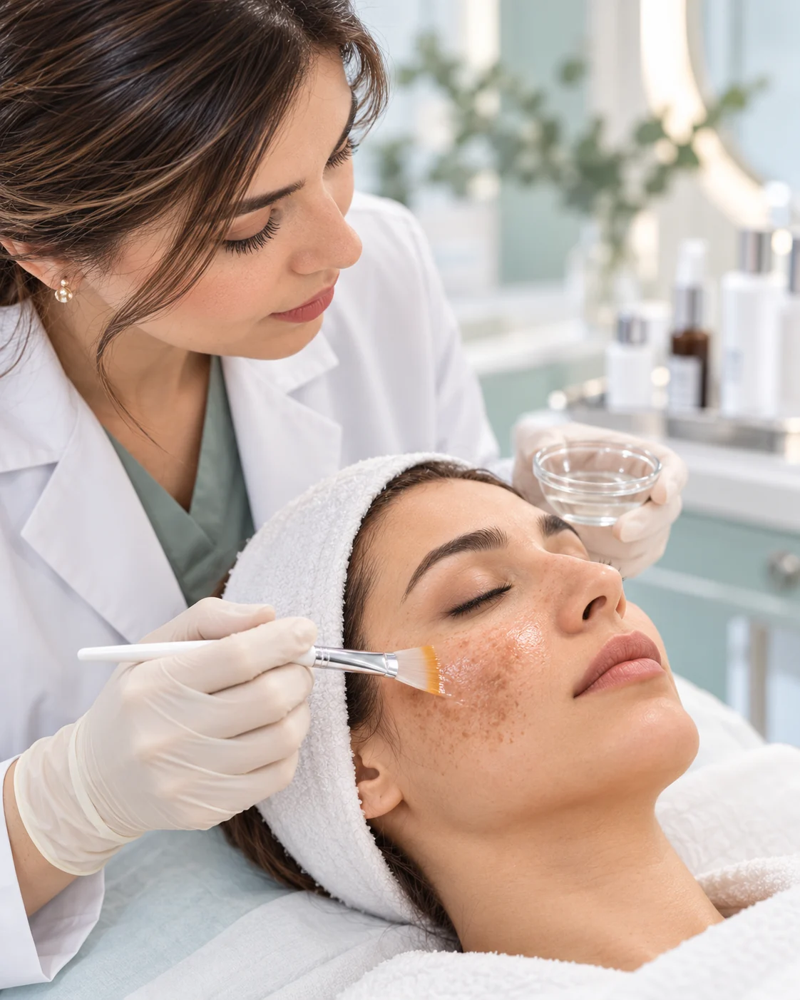
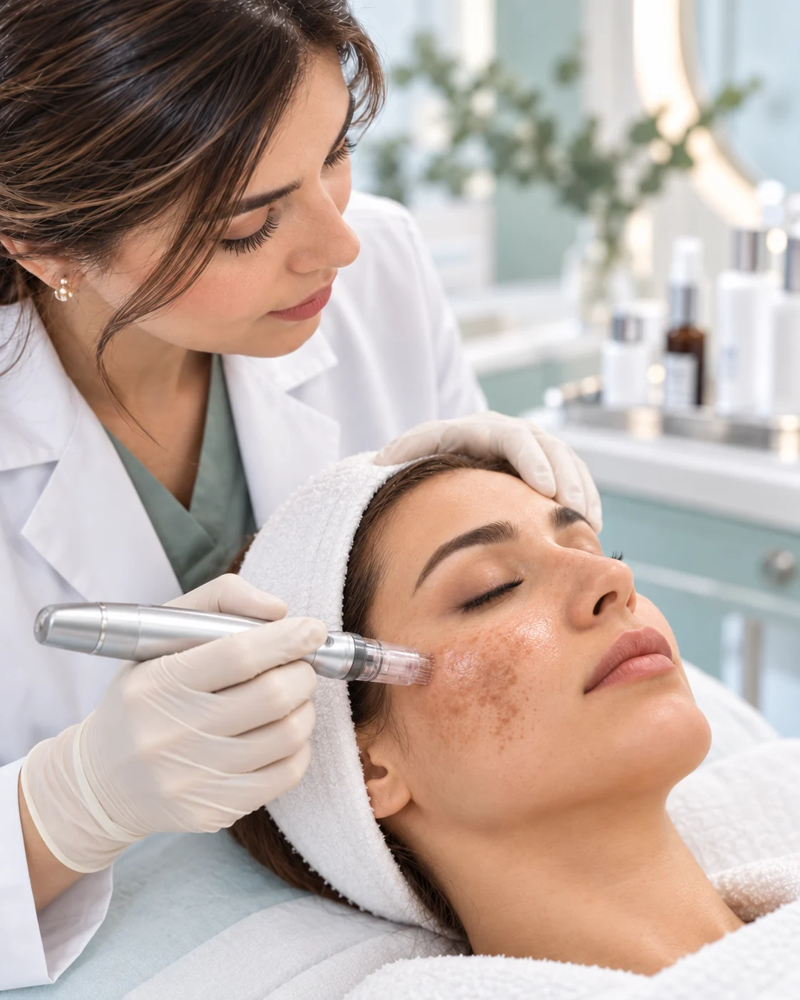
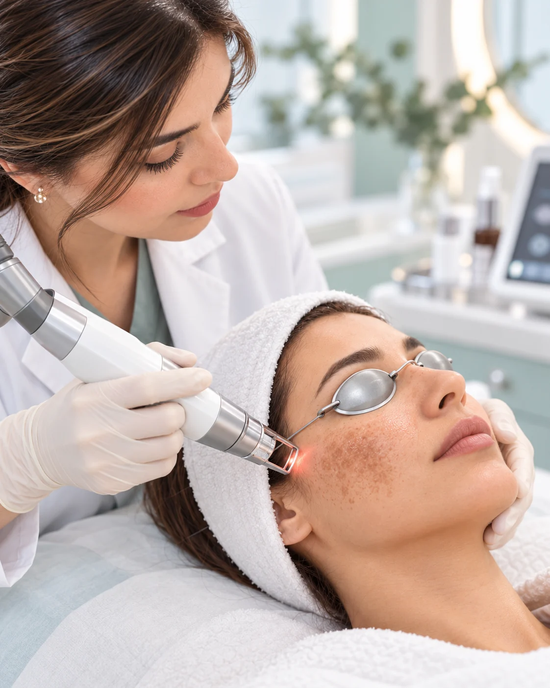
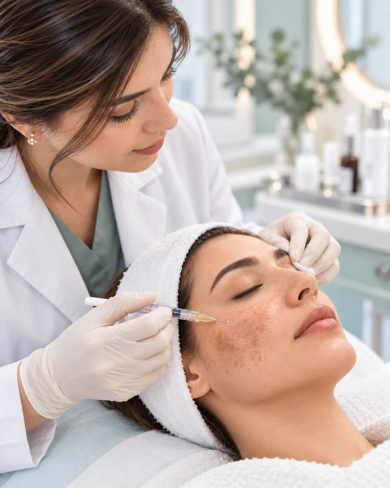

علت لک و ملاسما چیست؟
لکهای پوستی میتوانند به دلایل مختلفی ایجاد شوند. تماس با نور خورشید، تغییرات هورمونی، زمینه ژنتیکی، برخی داروها و التهاب یا آسیب قبلی پوست از عواملی هستند که میتوانند در ایجاد یا تشدید لک نقش داشته باشند.
ملاسما یکی از انواع شایع لکهای صورت است که معمولاً بهصورت لکههای قهوهای یا خاکستری ـ قهوهای، اغلب به شکل قرینه، روی قسمتهایی مانند گونهها، پیشانی و بالای لب دیده میشود. عواملی مانند نور خورشید و تغییرات هورمونی میتوانند در بروز یا تشدید آن نقش داشته باشند.
به همین دلیل، همه لکهای پوستی به یک روش درمانی پاسخ نمیدهند و تشخیص نوع لک و عوامل مؤثر در آن، قبل از انتخاب درمان اهمیت دارد.

لک و ملاسما چگونه بررسی میشوند؟
بررسی لکهای پوستی با توجه به محل، رنگ، الگوی توزیع، مدت زمان ایجاد و عوامل مؤثر در شروع یا تشدید آنها انجام میشود. همچنین سابقه مصرف داروها، تغییرات هورمونی، میزان مواجهه با نور خورشید و سابقه التهاب یا آسیب پوستی میتواند در ارزیابی اهمیت داشته باشد.
در صورت نیاز، بررسیهای تکمیلی برای افتراق انواع مختلف لک و شناسایی عوامل زمینهای انجام میشود. هدف از این ارزیابی، تشخیص نوع لک و انتخاب روش درمان متناسب با شرایط پوست هر فرد است.

روش درمان لک و ملاسما چگونه انتخاب میشود؟
روش درمان لکهای پوستی برای همه افراد یکسان نیست و بر اساس نوع لک، عمق و محل آن، نوع پوست و عوامل مؤثر در ایجاد یا تشدید لک انتخاب میشود.
بسته به شرایط فرد، برنامه درمانی ممکن است شامل مراقبت و محافظت در برابر نور خورشید، درمانهای موضعی و در صورت نیاز روشهای کمکدرمانی در مطب باشد. در ملاسما، کنترل عوامل تشدیدکننده و ادامه مراقبتهای پوستی نیز اهمیت دارد، زیرا این نوع لک میتواند مستعد عود یا تشدید مجدد باشد.
هدف، انتخاب برنامهای متناسب با شرایط پوست هر فرد و کاهش احتمال تحریک پوست و تشدید لک است.
روشهای کمکدرمانی لک و ملاسما در مطب
پس از بررسی نوع لک و شرایط پوست، برنامه درمانی میتواند شامل ترکیبی از مراقبتهای پوستی در منزل و روشهای درمانی در مطب باشد. انتخاب روشها و ترکیب آنها برای هر فرد بر اساس نوع لک، نوع پوست و میزان حساسیت پوست انجام میشود.




سوالات متداول درباره لک و ملاسما
آیا ملاسما کاملاً درمان میشود؟
ملاسما معمولاً یک مشکل پوستی مستعد عود است. درمان میتواند به کاهش لک و کنترل آن کمک کند، اما عواملی مانند نور خورشید، تغییرات هورمونی و برخی محرکها ممکن است باعث تشدید یا بازگشت آن شوند. به همین دلیل، مراقبت و پیشگیری از عود بخش مهمی از برنامه درمانی است.
آیا همه لکهای صورت ملاسما هستند؟
خیر. لکهای صورت میتوانند علل متفاوتی داشته باشند و ملاسما تنها یکی از آنهاست. لک ناشی از التهاب، آفتاب و برخی بیماریها یا عوامل دیگر ممکن است ظاهر مشابهی داشته باشند و انتخاب درمان به تشخیص نوع لک بستگی دارد.
برای درمان لک، لیزر بهتر است یا کرم و سرم؟
یک روش واحد برای همه افراد بهترین انتخاب نیست. نوع لک، نوع پوست و عوامل زمینهای تعیین میکنند که درمان موضعی، روشهای مطبی یا ترکیبی از آنها مناسبتر باشد.
درمان لک و ملاسما به چند جلسه نیاز دارد؟
تعداد جلسات به نوع و شدت لک، روش درمان و پاسخ پوست بستگی دارد و نمیتوان برای همه افراد تعداد ثابتی تعیین کرد. پس از ارزیابی پوست میتوان برنامه درمانی مناسبتری مشخص کرد.